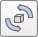

|

Inverse kinematics tutorial
This tutorial explains how to use CoppeliaSim's kinematics functionality, while building a 7 DoF redundant manipulator. But before that, make sure to have a look at the various example scenes related to IK and FK in folder scenes/kinematics.
This tutorial is segmented into 3 parts:
Building the simple simulation model of a redundant manipulator
Setting up an inverse kinematics task
Testing the inverse kinematics
Simple simulation model
For this tutorial, we will build a non-dynamic manipulator, that just uses inverse kinematics without using any physics engine functionality. The CoppeliaSim CAD data related to this tutorial (redundantManipulator.stl) is located in CoppeliaSim's installation folder cadFiles. A CoppeliaSim scene related to this tutorial can be found in scenes/tutorials/InverseKinematics. Click [Menu bar --> File --> Import --> Mesh...] then select the file to import. Also refer to the section on how to import/export shapes. A dialog pops open with various import options. Click Import. A single simple shape was imported and is located in the middle of the scene. The shape also appears in the scene hierarchy on the left hand side of the main window. Depending on how the original CAD data was exported, the imported CAD data could be at a different scale, different location, or even subdivided into several shapes. Following figure shows the imported shape:
As you can see, the import operation has left us with a single shape, where we expected several shapes. This means that we will have to divide the manipulator object ourselves: select the object (just click on it in the scene or the scene hierarchy), then click [Menu bar --> Edit --> Grouping/Merging --> Divide selected shapes]. Following is what you should have:
The original shape was divided into several sub-shapes (see also the scene hierarchy). The shape division algorithm operates by grouping all triangles that are linked by common edges. Depending on how the original mesh was created or exported, such a division procedure cannot be performed. In that case you will have to manually extract shapes in the triangle edit mode or in an external editor.
Next, we will change colors of the various objects so as to have a nice visual appearance. First double-click a shape icon in the scene hierarchy. The shape properties dialog opens. While a shape is selected, click on Adjust color in the dialog: this will allow you to adjust the various color components of the selected shape. For now, just adjust the ambient/diffuse color component of your shapes. To transfer the color of one shape to another shape, select both shapes and make sure the last selected shape (indicated with a white bounding box) is the one you want to take the color from, then simply click the Apply to selection button in the Colors section of the shape dialog. Once you finished coloring, you might have following situation:
In next step, we will add the 7 joints of the manipulator. One way of doing this is to add the joints into the scene, then specify their appropriate position and orientation (through the position dialog and the orientation dialog). This is however not possible, when you don't know the exact joint linear/angular positions as in our case, and so we will have to extract them from the shapes that we have:
Select all imported shapes and click [Menu bar --> Edit --> Reorient bounding box --> with reference frame of world]. This operation guarantees that our bounding boxes are aligned with the absolute reference frame, and given the current manipulator configuration, represents the smallest bounding boxes. Click [Menu bar --> Add --> Joint --> Revolute] to insert a revolute joint into the scene. The default position is at (0;0;0) and its default orientation is vertical, and so the joint is hidden by the manipulator's base cylinder. While the joint is still selected, ctrl-select the base cylinder, then open the position dialog on the position tab and click the Apply to selection. This just positioned the joint at the exact same coordinates as the base cylinder (this operation however only slightly adjusted the joint's vertical position since it was already almost in position). Now repeat the procedure for all other joints in the manipulator (remember there should be a total of 7). All joints are in position now, however, some of them have the wrong orientation. Select all joints that should be aligned with the world's Y-axis, then enter (90,0,0) for the Alpha, Beta and Gamma items in the orientation dialog, on the orientation tab, then click the Apply to selection button. Next, select the joint that should be aligned with the world's X-axis, then enter (0,90,0) for Alpha, Beta and Gamma. All joints have the right position and orientation now.
You can now adjust the joint sizes (check the Length and Diameter items) in the joint properties dialog (that you can open by double-clicking a joint icon in the scene hierarchy). Make sure that all joints are clearly visible. This is what you should have:
The next step in this tutorial is to group shapes that belong to the same rigid entity. Select the 5 shapes that are part of link 1 (the base cylinder being link 0), then click [Menu bar --> Edit --> Grouping/Merging --> Group selected shapes]. Once the shapes are grouped in a compound shape, you could re-align its bounding box with the world, but this step is not required (and has only a visual effect). Repeat the same procedure with all shapes that logically belong together. In this tutorial we will not actuate the gripper's fingers, and so simply rigidly group them with the last link. When all shapes that are meant to be grouped share the same visual attributes, try merging them together instead: [Menu bar --> Edit --> Grouping/Merging --> Merge selected shapes].
At this point you can rename all objects in the scene in following way, when going from base to tip: redundantRobot - redundantRob_joint1 - redundantRob_link1 - redundantRob_joint2, etc. Just double-click an object's alias in the scene hierarchy to edit it.
Now we can build the kinematic chain, going from tip to base: select object redundantRob_link7, then ctrl-select object redundantRob_joint7 and click [Menu bar --> Edit --> Make last selected object parent]. Alternatively you can drag an object onto another one in the scene hierarchy to achieve a similar operation. Next do the same for object redundantRob_joint7 and object redundantRob_link6. Continue in a same way until the whole kinematic chain of the manipulator was built. This is what you should have (notice the scene hierarchy structure):
Select all joints, then in the joint dialog, select kinematic mode, then click Apply to selection. Keep the joints selected, then open the object common properties and in the Visibility layers section, disable layer 2 and enable layer 10, then click the related Apply to selection button. This just sent all joints to the visibility layer 10, effectively making them invisible. Have a look at the layer selection dialog if you wish to temporarily enable/disable some layers.
In CoppeliaSim, an IK task requires specifying at least following elements:
a kinematic chain described with a tip dummy and a base object.
a target dummy that the tip dummy will be constrained to follow.
We already have the base object (object redundantRobot). Let's add a dummy object, rename it to redundantRob_tip and set its position to (0.324,0,0.62) using the coordinate and transformation dialog. Next, attach the dummy to redundantRob_link7 (select redundantRob_tip, then redundantRob_link7, then [Menu bar --> Edit --> Make last selected object parent]. The tip dummy is ready!
Now let's prepare the target dummy: copy and paste redundantRob_tip and rename the copy to redundantRob_target. The target dummy is ready.
Now we will add a way to easily manipulate the robot, without having to worry about breaking it by shifting the wrong objects around. We will therefore define it as a model. First, move redundantRob_tip and redundantRob_target to layer 11 to make both dummies invisible. Then shift-select all visible objects in the scene view, ctrl-click the object redundantRobot in the scene hierarchy to remove it from the selection, then open the object common properties dialog. Check the Select base of model instead item, then the related Apply to selection button. Clear the selection with <ESC>, then select redundantRobot. In the same dialog, check the Object is model base item, then close the dialogs. Notice how a stippled bounding box now encompasses the whole manipulator:
Click any object on the manipulator and notice how the base object redundantRobot always gets selected instead.
Next, we add a manipulation sphere that we will use to manipulate the robot's gripper position/orientation. Click [Menu bar --> Add --> Primitive shape --> Sphere] to open the primitive shape dialog, indicate 0.05 for the X-Size, Y-Size and Z-Size, then uncheck the Create dynamic and respondable shape item and click OK. Adjust the newly added sphere's position to be the same as redundantRob_target (using the coordinate and transformation dialog). The sphere now appears at the tip of the manipulator. Rename the sphere to redundantRob_manipSphere, then make it parent of redundantRob_target. Make redundantRobot parent of rendundantRob_manipSphere: the target dummy and the manipulation sphere are now also part of the robot model. Collapse the redundantRobot tree in the scene hierarchy. The redundant manipulator model is ready!
Setting up the inverse kinematics task
Inverse kinematics is entirely set up by having a script calling appropriate API commands: the idea is to build an equivalent kinematic model via the functions provided by the kinematics plugin. The approach uses the concept and terminology of IK groups and IK elements.
Select object redundantRobot, then [Menu bar --> Add --> Associated child script --> Non-threaded] to attach a child script to that object. Double-click the script icon that appeared next to the object alias, and replace the script content with following code:
function sysCall_init()
-- Build a kinematic chain and 2 IK groups (undamped and damped) inside of the IK plugin environment,
-- based on the kinematics of the robot in the scene:
-- There is a simple way, and a more elaborate way (but which gives you more options/flexibility):
-- Simple way:
local simBase=sim.getObject('.')
local simTip=sim.getObject('./redundantRob_tip')
local simTarget=sim.getObject('./redundantRob_target')
-- create an IK environment:
ikEnv=simIK.createEnvironment()
-- create an IK group:
ikGroup_undamped=simIK.createIkGroup(ikEnv)
-- set its resolution method to undamped:
simIK.setIkGroupCalculation(ikEnv,ikGroup_undamped,simIK.method_pseudo_inverse,0,6)
-- create an IK element based on the scene content:
simIK.addIkElementFromScene(ikEnv,ikGroup_undamped,simBase,simTip,simTarget,simIK.constraint_pose)
-- create another IK group:
ikGroup_damped=simIK.createIkGroup(ikEnv)
-- set its resolution method to damped:
simIK.setIkGroupCalculation(ikEnv,ikGroup_damped,simIK.method_damped_least_squares,1,99)
-- create an IK element based on the scene content:
simIK.addIkElementFromScene(ikEnv,ikGroup_damped,simBase,simTip,simTarget,simIK.constraint_pose)
-- Elaborate way:
--[[
simBase=sim.getObject('.')
simTip=sim.getObject('./redundantRob_tip')
simTarget=sim.getObject('./redundantRob_target')
simJoints={}
for i=1,7,1 do
simJoints[i]=sim.getObject('./redundantRob_joint'..i)
end
ikJoints={}
-- create an IK environment:
ikEnv=simIK.createEnvironment()
-- create a dummy in the IK environment:
ikBase=simIK.createDummy(ikEnv)
-- set that dummy into the same pose as its CoppeliaSim counterpart:
simIK.setObjectMatrix(ikEnv,ikBase,-1,sim.getObjectMatrix(simBase,-1))
local parent=ikBase
for i=1,#simJoints,1 do -- loop through all joints
-- create a joint in the IK environment:
ikJoints[i]=simIK.createJoint(ikEnv,simIK.jointtype_revolute)
-- set it into IK mode:
simIK.setJointMode(ikEnv,ikJoints[i],simIK.jointmode_ik)
-- set the same joint limits as its CoppeliaSim counterpart joint:
local cyclic,interv=sim.getJointInterval(simJoints[i])
simIK.setJointInterval(ikEnv,ikJoints[i],cyclic,interv)
-- set the same joint lin./ang. position as its CoppeliaSim counterpart joint:
simIK.setJointPosition(ikEnv,ikJoints[i],sim.getJointPosition(simJoints[i]))
-- set the same object pose as its CoppeliaSim counterpart joint:
simIK.setObjectMatrix(ikEnv,ikJoints[i],-1,sim.getObjectMatrix(simJoints[i],-1))
-- set its corresponding parent:
simIK.setObjectParent(ikEnv,ikJoints[i],parent,true)
parent=ikJoints[i]
end
-- create the tip dummy in the IK environment:
ikTip=simIK.createDummy(ikEnv)
-- set that dummy into the same pose as its CoppeliaSim counterpart:
simIK.setObjectMatrix(ikEnv,ikTip,-1,sim.getObjectMatrix(simTip,-1))
-- attach it to the kinematic chain:
simIK.setObjectParent(ikEnv,ikTip,parent,true)
-- create the target dummy in the IK environment:
ikTarget=simIK.createDummy(ikEnv)
-- set that dummy into the same pose as its CoppeliaSim counterpart:
simIK.setObjectMatrix(ikEnv,ikTarget,-1,sim.getObjectMatrix(simTarget,-1))
-- link the two dummies:
simIK.setLinkedDummy(ikEnv,ikTip,ikTarget)
-- create an IK group:
ikGroup_undamped=simIK.createIkGroup(ikEnv)
-- set its resolution method to undamped:
simIK.setIkGroupCalculation(ikEnv,ikGroup_undamped,simIK.method_pseudo_inverse,0,6)
-- make sure the robot doesn't shake if the target position/orientation wasn't reached:
simIK.setIkGroupFlags(ikEnv,ikGroup_undamped,1+2+4+8)
-- add an IK element to that IK group:
local ikElementHandle=simIK.addIkElement(ikEnv,ikGroup_undamped,ikTip)
-- specify the base of that IK element:
simIK.setIkElementBase(ikEnv,ikGroup_undamped,ikElementHandle,ikBase)
-- specify the constraints of that IK element:
simIK.setIkElementConstraints(ikEnv,ikGroup_undamped,ikElementHandle,simIK.constraint_pose)
-- create another IK group:
ikGroup_damped=simIK.createIkGroup(ikEnv)
-- set its resolution method to damped:
simIK.setIkGroupCalculation(ikEnv,ikGroup_damped,simIK.method_damped_least_squares,1,99)
-- add an IK element to that IK group:
local ikElementHandle=simIK.addIkElement(ikEnv,ikGroup_damped,ikTip)
-- specify the base of that IK element:
simIK.setIkElementBase(ikEnv,ikGroup_damped,ikElementHandle,ikBase)
-- specify the constraints of that IK element:
simIK.setIkElementConstraints(ikEnv,ikGroup_damped,ikElementHandle,simIK.constraint_pose)
--]]
end
function sysCall_actuation()
-- There is a simple way, and a more elaborate way (but which gives you more options/flexibility):
-- Simple way:
-- try to solve with the undamped method:
if simIK.applyIkEnvironmentToScene(ikEnv,ikGroup_undamped,true)==simIK.result_fail then
-- the position/orientation could not be reached.
-- try to solve with the damped method:
simIK.applyIkEnvironmentToScene(ikEnv,ikGroup_damped)
-- We display a IK failure report message:
sim.addLog(sim.verbosity_scriptwarnings,"IK solver failed.")
end
-- Elaborate way:
--[[
-- reflect the pose of the target dummy to its counterpart in the IK environment:
simIK.setObjectMatrix(ikEnv,ikTarget,ikBase,sim.getObjectMatrix(simTarget,simBase))
-- try to solve with the undamped method:
if simIK.handleIkGroup(ikEnv,ikGroup_undamped)==simIK.result_fail then
-- the position/orientation could not be reached.
-- try to solve with the damped method:
simIK.handleIkGroup(ikEnv,ikGroup_damped)
-- We display a IK failure report message:
sim.addLog(sim.verbosity_scriptwarnings,"IK solver failed.")
end
-- apply the joint values computed in the IK environment to their CoppeliaSim joint counterparts:
for i=1,#simJoints,1 do
sim.setJointPosition(simJoints[i],simIK.getJointPosition(ikEnv,ikJoints[i]))
end
--]]
end
function sysCall_cleanup()
-- erase the IK environment:
simIK.eraseEnvironment(ikEnv)
end
Above script creates an equivalent kinematic model from the CoppeliaSim model, then in each simulation step, reads the position/orientation of the CoppeliaSim target, applies it to the target of the equivalent kinematic model, runs the IK solver, and finally reads the joint angles of the equivalent kinematic model, and applies them to the joints of the CoppeliaSim model. To handle singular configurations and situations where the target is out of reach, we first try with a non-damped solver, and if it fails, we revert to a damped solver (with a damped solver, when damping is large, resolution becomes more stable but convergence slower).
Running the simulation
Our inverse kinematics task is ready! Let's test it. Run the simulation, then select the green manipulation sphere. Next, select the object translation toolbar button:

Now drag the object with the mouse: the manipulator should follow. Also try the object rotation toolbar button:

Try also holding down the ctr- or shift-keys during manipulation. Switch back to the object translation toolbar button, and try to drag the object as far as possible, and notice how the inverse kinematics task is quite robust, thanks to the damped component. Stop the simulation, then disable the damped IK group and try again. Try also to disable individual constraints in the corresponding IK element and notice how the manipulator behaves during simulation.
Run the simulation, and copy-paste a few times the manipulator and shift/rotate the copies around, also changing their configurations by dragging their manipulation spheres. Notice how every manipulator instance is fully functional regarding IK.
|